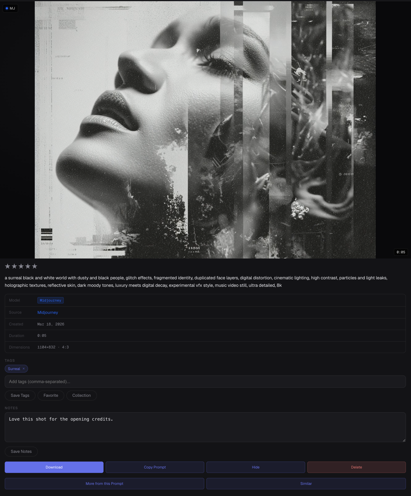

GenCatalog saves every Midjourney generation with the full prompt, model version, and parameters — so your best work is always reproducible.

The image isn't the hard part. The hard part is the exact wording, the --style, the --cref, the --sref, the --chaos, the model version, the custom weights. Those details live in your head — or nowhere at all.
GenCatalog captures everything automatically. Scan your entire Midjourney history and your recipe library is ready in minutes.
The image is right there. The prompt that made it work is buried three weeks back in Midjourney's interface — if it's still there at all.
You nailed the --chaos, --weird, and --style combo. But you didn't write it down. Now you're guessing.
Your Midjourney library is enormous. Without search across prompts and metadata, it's just a pile of files.
Open Midjourney in Chrome, click Scan Library, and GenCatalog imports your entire generation history — prompts, parameters, and all four image variants per job.
Every saved generation includes the complete prompt, model version, aspect ratio, chaos, seed, style references, and every other parameter — exactly as you typed it.
A Save button appears directly on each image as you browse Midjourney. New generations are captured with one click — no copy-pasting, no manual entry.
Find any generation by prompt text, model version, tags, or date. Your Midjourney library becomes instantly searchable — even years of images.
GenCatalog captures the full full_command from Midjourney — not just the prompt text, but every modifier that shaped the result.
Each Midjourney generation is saved with everything that made it — so you can reproduce, learn from, and iterate on your best work months later.
GenCatalog stores your Midjourney generations locally. Your prompts, parameters, and image files stay on your machine — fully searchable and under your control. No cloud uploads. No account required.
Download GenCatalog, scan your history, and never lose a prompt again.